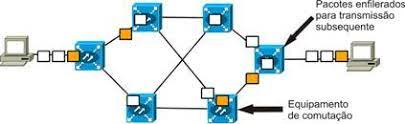

Introdução
A Internet, um serviço tão comum e indispensável hoje em dia.
Ela está presente praticamente em todos os lugares: nas empresas, nas lojas, nas casas, no sinal wifi da praça, nos ônibus e metrôs. E todos a usam: estudantes, professores, advogados, desempregados, crianças, médicos...
Mas uma grande parte desses mesmos usuários não sabem qual a origem da Internet, e muito menos entendem seu funcionamento e estrutura.
O utilizador que compreende o mecanismo por trás de um serviço que consome, consequentemente faz um melhor uso do mesmo, além de não desperdiçar os olhos da cara com técnicos e profissionais quando alguma pane surge em sua rede.
Uma ferramenta que possibilitou a união das pessoas ao redor do globo em uma escala gigantesca nunca vista antes. Independente de raça, nacionalidade, credo, ideologia, idioma... todos a usam: A Internet
História
Para melhor explicar a história da Internet, começamos por um tópico a parte: A Guerra Fria
A Guerra Fria foi uma disputa entre duas potências mundiais, são eles: Estados Unidos (bloco capitalista) e União Soviética (bloco socialista). Essa guerra não declarada durou desde os anos 1946 até 1991, com a queda da União Soviética.
Em meio a tensão militar, as duas potências temiam ocorrer um ataque em seus territórios, fato esse que impulsionou o governo americano a dar vida a primeira versão do que seria a Internet.
Em 1969, a ARPA (Advanced Research Projects Agency) criou a ARPANET (Advanced Research Projects Agency Network) e é exatamente esse projeto que nos anos futuros se tornaria a Internet que conhecemos.
A estrutura básica da Arpanet (ou Internet) gira em torno de um mecanismo simples e dinâmico: Seu funcionamento é composto por 2 ou mais computadores interligados entre si, que trocam dados e informações em conjunto, proporcionando rapidez e robusticidade no envio e recebimento de informações sigilosas.
Se um computador pertencente a rede fosse destruído ou comprometido pelos soviéticos, a rede como um todo e a troca de informações não seriam afetadas, preservando sua operação e ajudando nas estratégias militares.
Desde 1969 até final dos anos 1980, a Internet era usado apenas por indivíduos acadêmicos e militares, sem contar o fato de que seu uso era difícil e um tanto quanto trabalhoso para um usuário comum.
Mas outra revira volta está prestes a acontecer quando o físico britânico Tim Berners-Lee criou a World Wide Web em 1991, aplicando os conceitos de cliente-servidor e a comunicação por hipertexto por meio de navegadores.
Com seu fácil uso proporcionado pela WWW, aliado ao fato das empresas começarem a explorar comercialmente esse serviço, a quantidade de usuários só aumentou de forma geométrica desde então.
Então a partir dos anos 2000 uma nova revolução irá surgir com a explosão de serviços e dos mais variados sites na rede mundial. Serviços como Facebook, Orkut, Twitter e Instagram vieram dessa explosão tecnológica, literalmente qualquer um, em qualquer lugar, apenas munido de um computador ou outro dispositivo conectado a Internet, tem o mundo todo na palma das suas mãos.
Uma tecnologia arcaica apenas para fins militares criada em 1969 foi o responsável por uma das maiores revoluções da humanidade. Há quem diga que estamos passando pela quarta revolução industrial. Tudo isso graças a: Internet.

Funcionamento
Resumindo em poucas palavras: a Internet nada mais é do que vários computadores interligados formando uma rede, que trocam dados e informações entre si.
O funcionamento da Internet depende de vários elementos trabalhando em conjunto, na qual cada elemento tem uma tarefa específica. Esses elementos cruciais são:
- Protocolos
- Comutação de Pacotes
- Cliente-servidor
- Roteadores
- Rede Mundial de Computadores (World Wide Web)
- ISP (Internet Service Provider - Provedor de Acesso a Internet)
Protocolos

De forma resumida, protocolos são regras e métodos sobre como os computadores se comunicam.
Pense em um idioma, para haver comunicação entre 2 ou mais pessoas é necessário que o idioma que eles falam seja o mesmo. A mesma lógica se aplica aos protocolos de Internet, uma vez que para haver uma troca de dados robusta e confiável é necessário que os dois hosts "falem" o mesmo idioma.
Existem centenas de protocolos das mais variadas funções e utilidades, mas vamos citar as 3 mais importantes: IP, TCP e HTTP.
IP: IP é uma abreviação de Internet Protocol. Isso é basicamente um endereço numérico associado a um computador conectado a Internet e tal endereço é único na rede toda.
Um endereço IP é composto por 4 blocos numéricos chamados octetos, sendo que cada octeto pode assumir um valor entre 0 e 255. Um endereço típico seria: 78.167.92.206 ou 142.74.95.57.
Vamos a um exemplo prático:
TCP: TCP é uma abreviação de Transfer Control Protocol. Esse protocolo é responsável por dividir uma informação inteira em pedaços menores chamados de pacotes, e enviá-los a seu destino.
Outra função bastante importante desse elemento é que ele usa de mecanismos para assegurar que os pacotes enviados cheguem ao destino de forma íntegra; caso algum pacote se corrompa ou haja perda de pacotes, esse protocolo reenvia o pacote comprometido em questão, garantindo assim a confiabilidade no envio de informações.
O mesmo também gerencia e organiza a conexão entre duas máquinas (ex: cliente-servidor).
HTTP: HTTP é uma abreviação de HyperText Transfer Control e sua função é de fazer o download da página web para o seu navegador com base na URL que o usuário digitou na barra de pesquisas do mesmo.
Seu funcionamento segue a mesma estrutura do TCP, exceto pelo fato dele ser específico para páginas web. Quando o usuário entra com a URL na barra de pesquisas, o HTTP inicia a troca de dados entre seu computador e o servidor onde o serviço web está hospedado. Nessa troca de informações é feito o download da página web em questão, o navegador por sua vez interpreta essas informações recebidas e o renderiza como um site.
Comutação de pacotes
Comutação de pacotes é o ingrediente especial que fez da Internet algo diferente. Nesse modelo as informações que trafegam de um dispositivo a outro são divididos em pacotes menores, ainda no dispositivo de origem. Cada pacote contém o endereço IP de origem e o endereço IP de destino.
Esses pacotes endereçados por sua vez podem seguir por diferentes caminhos para chegar ao destino. Uma vez no destino os pacotes estão desorganizados e fora de ordem, o receptor então por meio do protocolo TCP organiza e reúne todos esses pacotes recebidos e os reconstrói como uma informação sólida e íntegra.
Esse modelo opera de forma oposta a seu avô, a comutação de circuitos - esse modelo arcaico é utilizado em ligações telefônicas e as informações trafegam de forma contínua e por um caminho único, sendo suscetível a falhas e problemas na linha.
Foi a tecnologia de comutação de pacotes que tornava a então Arpanet indestrutível e robusta!
Cliente - Servidor

O modelo cliente-servidor é uma estrutura que define quais hosts são aqueles que oferecem um serviço (servidor) e quais hosts são aqueles que irão usufruir dos serviços disponibilizados pelo servidor (cliente).
Servidor: é um computador central (ou por vezes um software) que oferece um serviço em meio a uma rede.
Cliente: um computador que não oferece serviço algum, e apenas usufrui dos serviços disponibilizados pelo servidor central.
São vários os exemplos de modelo cliente-servidor, mas os mais conhecidos são: servidores DNS, servidores de email, servidores de arquivos e servidores de jogos online - todos esses serviços são usufruidos por um cliente nas redondezas.
Roteadores
Roteador nada mais é do que um dispositivo que faz uma ponte entre as inúmeras redes existentes na Internet como um todo.
Como citado anteriormente, a Internet nada mais é do que vários computadores trocando informações entre si; todo computador por sua vez pertence a pelo menos uma rede local (LAN) e os roteadores fazem a união entre as diferentes redes (LAN) formando então a WAN (Wide Area Network - Internet mundial).
Os pacotes que trafegam pela rede na verdade vão "saltando" entre os diferentes roteadores em meio ao caminho até chegar a seu destino final. O roteador por sua vez define qual o próximo roteador que o pacote deve atingir afim de chegar a seu alvo; o mesmo também possui uma lista de roteamento com informações sobre o nível de congestionamento de uma determinada linha ou qual o caminho mais fácil e curto para se atingir o destino final.
Rede Mundial de Computadores (World Wide Web)
Com os principais tópicos sobre o funcionamento da Internet já abordados anteriormente, já é possível se ter um entendimento sobre a World Wide Web (Rede Mundial de Computadores).
World Wide Web, ou WWW, foi o que popularizou a Internet e fez com que o mesmo se tornasse a febre que é nos dias atuais. Antes da sua criação em 1991, a Internet era de difícil acesso e de uso restrito a técnicos de TI.
Seu modelo se baseia em páginas estruturadas em hipertextos, isso é, são páginas que contém imagens, vídeos, sons, textos e diversas aplicações acessíveis por meio de um link. Uma página pode conter infinitos links para as mais infinitas páginas dos mais diferentes tipos. Tal infinidade de páginas e informações levou a criação de motores de buscas, como Google ou Yahoo.
Basicamente, o navegador faz o download da página web contactando o servidor na qual o site está hospedado, uma vez finalizado o download, o navegador interpreta as linguagens de marcação/programação contidas no arquivo (HTML, CSS, Javascript), e renderiza o conteúdo na forma de uma página interativa.
ISP (Internet Service Provider)

ISP (Internet Service Provider ou Provedor de Acesso a Internet) são as empresas e corporações que oferecem acesso a Internet ao usuário final, permitindo sua inserção na rede mundial de computadores.
É cobrada uma taxa mensal ao usuário final em troca de acesso ilimitado (ou limitado) a Internet. O que é conhecido como velocidade da Internet na verdade é a largura de banda ou banda larga. Quanto maior for a banda larga, mais veloz será a Internet. Se a infraestrutura da Internet de uma determinada região for boa, ou a infraestrutura de uma ISP também for boa, consequentemente a velocidade de banda também será maior ao usuário final ou consumidor.
Uma ISP de maneira geral é uma rede com todos seus assinantes ali reunidos. Um ISP se conecta com outras IPSs por meio de roteadores, que por sua vez se conectam com outras ISPs ainda mais gigantescas e robustas, até atingir níveis grandes dessa hierarquia global.